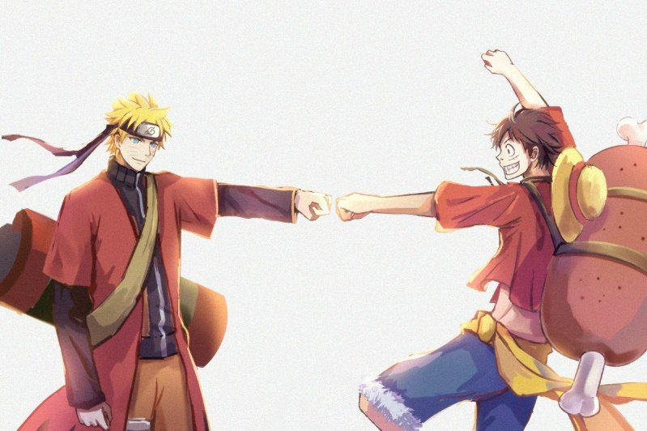

Mes mangas préférés
Naruto Top 1
Naruto (ナルト?) est un shōnen manga écrit et dessiné par Masashi Kishimoto. Naruto a été prépublié dans l'hebdomadaire Weekly Shōnen Jump de l'éditeur Shūeisha entre septembre 1999 et novembre 2014. La série a été compilée en 72 tomes. La version française du manga est publiée par Kana entre mars 2002 et novembre 20161. À la suite de son succès sous forme de manga, une adaptation en anime est réalisée par les studios Pierrot et Aniplex et est diffusée sur TV Tokyo depuis le 3 octobre 2002. Une seconde partie du récit a aussi vu le jour et a été renommée Naruto Shippuden lors de son adaptation. La série animée est diffusée en France depuis le 2 janvier 2006 sur Game One2 ainsi que sur NT1 et sur Cartoon Network depuis la rentrée 2007.
One Piece Top 2
One Piece (ワンピース, Wan Pīsu?) est une série de mangas shōnen créée par Eiichirō Oda. Elle est prépubliée depuis le 22 juillet 1997 dans le magazine hebdomadaire Weekly Shōnen Jump, puis regroupée en volumes reliés aux éditions Shūeisha depuis le 24 décembre 1997. 100 tomes sont commercialisés au Japon en septembre 2021. La version française est publiée directement en volumes reliés depuis le 1er septembre 2000 par Glénat. 99 volumes sont commercialisés en septembre 2021 en France. L'histoire suit les aventures de Monkey D. Luffy, un garçon dont le corps a acquis les propriétés du caoutchouc après avoir mangé par inadvertance un fruit du démon. Avec son équipage de pirates, appelé l'équipage de Chapeau de paille, Luffy explore Grand Line à la recherche du trésor ultime connu sous le nom de « One Piece » afin de devenir le prochain roi des pirates.
Naruto et Luffy ( héros )
